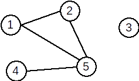
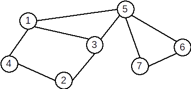
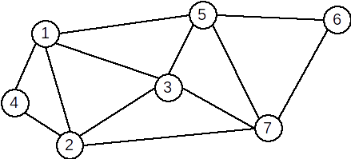

Grafuri Neorientate
Terminologie
Definiție: Se numește graf neorientat o pereche ordonată de mulțimi G=(X,U), unde:
- X este o mulțime finită și nevidă de elemente numite vârfuri sau noduri;
- U este o mulțime finită de submulțimi cu două elemente din X, numite muchii.
Vom nota în continuare vârfurile cu valori între 1 și n – unde n este număru de vârfuri din graf, iar muchiile cu [x,y] sau (x,y), unde x și y sunt vârfuri și se numesc extremitățile muchiei.
Un vecin al unui vârf x este orice vârf y cu proprietatea că există muchia [x,y].
Două vârfuri între care există muchie se numesc adiacente.
Două muchii sunt incidente dacă au o o extremitate comună. Un vârf este incident cu o muchie dacă vârful este extremitate a acelei muchii.
Mulțimea muchiilor are proprietatea de simetrie: dacă [x,y] este muchie, atunci și [y,x] este muchie.
Conform definiției:
- într-un graf neorientat nu există muchie de la un vârf la el însuși;
- intre două vârfuri distincte există cel mult o muchie.

Gradul unui vârf
Definiție Într-un graf neorientat se numește grad al unui vârf numărul de vârful adiacente cu acesta (sau numărul de muchii incidente cu acesta). Gradul unui vărf x se notează d(x) (degree).
Observații:
- un vârf cu gradul 0 se numește izolat. În graful de mai sus, vârful 6 este izolat.
- un vârf cu gradul 1 se numește terminal. În graful de mai sus, vârful 9 este vârf terminal.
- gradul maxim al unui vârf într-un graf cu n vârfuri este n-1.
Teoremă: Într-un graf neorientat, suma gradelor tuturor vârfurilor este dublul numărului de muchii.
Consecințe:
- Suma gradelor tuturor vârfurilor este număr par.
- Într-un graf neorientat, numărul de vârfuri de grad impar este întotdeauna par.
Reprezentarea grafurilor neorientate
Matricea de adiacență
Pentru un graf neorientat G=(X,U) cu n vârfuri, matricea de adiacență este o matrice cu n linii și n coloane și elemente din {0,1}.
Exemplu: Pentru graful neorientat de mai sus avem următoarea matrice de adiacență:
0 1 0 0 1
1 0 0 0 1
0 0 0 0 0
0 0 0 0 1
1 1 0 1 0
Observații:
- matricea de adiacență este simetrică față de diagonala principală;
- elementele de pe diagonala principală sunt 0;
- gradul unui vârf x este egal cu numărul de elemente 1 de pe linia (sau coloana) x;
- suma tuturor elementelor din matricea de adiacență a unui graf neorientat este egală cu dublul numărului de muchii din graf.
Lista de muchii
Lista de muchii a unui graf neorientat reprezintă o mulțime ce conține toate muchiile din graf.
Pentru graful de mai sus, lista de muchii este:
U={[1,2],[1,5],[2,5],[4,5]}
Pentru reprezentarea în memorie putem folosi:
- un tablou unidimensional cu elemente de tip struct {int I,J;}
- două tablouri unidimensionale cu elemente de tip int
- o listă alocată dinamic
Liste de adiacențe (de vecini)
Pentru un graf neorientat cu G=(X,U) se va memora numărul de vârfuri n și apoi, pentru fiecare vârf x, lista vârfurilor adiacente cu x, adică a vârfurilor y cu proprietatea că există muchia [x,y].
Pentru graful de mai sus, listele de adiacență sunt:
1: 2 5
2: 1 5
3: vidă
4: 5
5: 1 2 4
La reprezentarea în memorie trebui avut în vedere că dimensiunile listelor de vecini sunt variabile. De aceea, este neeficientă utilizarea unor tablouri alocate static. Astfel, putem folosi:
- un șir de n tablouri unidimensionale alocate dinamic;
- un șir de n vectori din STL;
- un șir de n liste simplu (dublu) înlănțuite alocate dinamic.
Graf parțial. Subgraf. Graf complementar
Definiție. Fie G=(X, U) un graf neorientat. Se numeşte graf parțial al grafului G, graful neorientat G1=(X, U1), unde U1 ⊆ U.
Din definiție rezultă:
- Un graf parțial al unui graf neorientat G=(V,U), are aceeaşi mulțime de vârfuri ca şi G, iar mulțimea muchiilor este o submulțime a lui U sau chiar U.
- Fie G=(X, U) un graf neorientat. Un graf parțial al grafului G se obține păstrând vârfurile şi eliminând eventual nişte muchii (se pot elimina şi toate muchiile sau chiar nici una).
Definiție. Fie G=(X, U) un graf orientat. Se numeşte subgraf al grafului G graful neorientat G1=(X1,U1) unde X1 ⊆ X iar U1 conține toate arcele din U care au extremitățile în X1.
Din definiție rezultă:
- Fie G=(X,U) un graf orientat. Un subgraf al grafului G, se obține ştergând eventual anumite vârfuri şi odată cu acestea şi muchiile care le admit ca extremitate (nu se pot şterge toate vârfurile deoarece s-ar obține un graf cu mulțimea vârfurilor vidă).
Definiție. Fie G=(X, U) un graf neorientat. Se numeşte graf complementar al grafului G, graful neorientat G1=(X, U1), cu proprietatea că două vârfuri x și y sunt adiacente în G1 dacă și numai dacă nu sunt adiacente în G.
Graf initial

Graf partial

Subgraf

Graf complementar

Observații. Un graf neorientat oarecare poate avea mai multe grafuri parțiale și subgrafuri, dar un unic graf complementar. Mai precis:
Teoremă: Fie G un graf neorientat cu n vârfuri și m muchii. Atunci:
- graful G admite 2m grafuri parțiale;
- graful G admite 2m grafuri parțiale;
- graful G admite un unic graf complementar.
Justificare:
Să ne amintim că o mulțime cu a elemente are 2a submulțimi, inclusiv mulțimea vidă și mulțimea inițială. Atunci:
- orice submulțime a mulțimii muchiilor induce un graf parțial. Sunt m muchii, deci 2m submulțimi, deci 2m grafuri parțiale.
- orice submulțime a mulțimii vârfuri induce un subgraf, mai puțin mulțimea vidă – un graf nu poate avea 0 vârfuri. Similar ca mai sus, sunt 2n–1 subgrafuri.
- graful complementar este unic determinat, deoarece complementara unei submulțimi față de o mulțime dată este unic determinată.
Graf nul. Graf complet. Graf regulat. Graf bipartit
Definiție: Un graf neorientat se numește graf nul dacă mulțimea muchiilor este vidă.
Într-un graf nul toate vârfurile sunt izolate.
Definiție. Fie G=(X, U) un graf neorientat. Graful G se numește graf complet dacă oricare două vârfuri distincte ale sale sunt adiacente. Un graf complet cu n vârfuri se notează Kn.
Exemplu: Graful următor este graful K5.

Într-un graf complet cu n vârfuri sunt C2n=n∗(n−1)2 muchii și fiecare vârf are gradul n-1.
Propoziție: Sunt 2n∗(n−1)2 grafuri neorientate distincte cu n vârfuri.
Definiție: Un graf în care toate nodurile au acelaşi grad se numește graf regulat.
Exemplu: Graful de mai jos este regulat.

Definiţie: Un graf G=(X, U) se numește graf bipartit dacă există două mulţimi nevide A și B astfel încât X=A ∪ B, A ∩ B = ∅ şi orice muchie u a lui G are o extremitate în A iar cealaltă în B. Mulţimile A şi B formează o partiţie a lui X.
Exemplu: Graful următor este bipartit. A={1,2,5,7} și B={3,4,6}.

Definiție: Un graf bipartit G=(X,U) se numește bipartit complet dacă pentru oricare două vârfuri x∈A și y∈B, există în graf muchia [x,y]; adică [x,y]∈U.
Exemplu: Graful următor este bipartit complet.

Conexitate
Lanț. Ciclu
Definiție: Se numește lanț o succesiune de vârfuri L=[x1,x2,⋯xk] cu proprietatea că oricare două vârfuri consecutive sunt adiacente.
Vârfurile x1 şi xk se numesc extremitățile lanțului. Numărul k-1 se numește lungimea lanțului și este numărul de muchii din care este format.
Lanțul care conține numai vârfuri distincte, două câte două, este lanț elementar.
Lanțul care conține numai muchii distincte este lanț simplu. Dacă muchiile unui lanț nu sunt distincte se numește lanț compus.
Definiție: Se numește ciclu un lanț simplu în care primul vârf este identic cu ultimul. Dacă toate vârfurile sunt distincte, mai puțin primul și ultimul, se numește ciclu elementar.
Lungimea unui ciclu este egală cu numărul de muchii din ciclu. Lungimea minimă a unui ciclu este 3.
Un ciclu se numește par dacă lungimea sa este pară, respectiv impar în caz contrar.
Un graf neorientat care nu conține niciun ciclu se numește aciclic.
Exemple: În graful de mai jos:
- [2,4,1,3,5,7] este un lanț elementar
- [3,5,7,6,5,1] este un lanț neelementar, dar simplu
- [2,3,5,7,6,5,3,1] este un lanț compus
- [1,5,3,2,4,1] este un ciclu elementar
- [1,3,5,7,6,5,1] este un ciclu neelementar
Graf conex. Componente conexe
Definiție: Un graf neorientat se numește graf conex dacă pentru oricare două vârfuri x și y diferite ale sale, există cel puțin un lanț care le leagă, adică x este extremitatea inițială și y este extremitatea finală.
Un graf cu un singur nod este, prin definiție, conex.
Definiție: Se numește componentă conexă a unui graf G=(X,U) un subgraf H=(Y, V), conex, al lui G care are proprietatea că nu există nici un lanț în G care să lege un vârf din Y cu un vârf din X – Y.
Subgraful H este conex și maximal cu această proprietate (dacă s-ar mai adăuga un vârf nu ar mai fi conex.)
Un graf este conex dacă admite o singură componentă conexă.
Exemple:
Graful următor este conex:
Graful următor nu este conex și are 4 componente conexe.

Definiție: Un graf este biconex dacă este conex şi pentru orice vârf eliminat subgraful generat îşi păstrează proprietatea de conexitate.
Arbore. Pădure
Definiție: Se numește arbore un graf conex și aciclic.
Exemplu: Graful următor este arbore:
Observatii
- Un arbore cu n vârfuri are n-1 muchii.
- Un arbore este un graf conex și minimal cu această proprietate; dacă s-ar mai elimina o muchie, graful nu ar mai fi conex.
- Un arbore este un graf aciclic și maximal cu această proprietate; dacă s-ar mai adăuga o muchie, s-ar obține un ciclu.
Un graf parțial care este arbore se numește arbore parțial.
Un graf care nu conține cicluri se mai numește pădure. Într-o pădure fiecare componentă conexă este arbore.
Graf hamiltonian. Graf eulerian
Definiție: Se numește graf hamiltonian un graf care conține un ciclu hamiltonian. Se numește ciclu hamiltonian un ciclu elementar care conține toate vârfurile grafului.
Exemplu: Graful următor este hamiltonian. Un ciclu hamiltonian este: [1,4,2,3,7,6,5,1]
Teoremă: Un G un graf neorientat. Dacă are n≥3 vârfuri şi gradul oricărui vârf verifică inegalitatea d(x)≥n/2 atunci G este hamiltonian.
Definiție: Se numește graf eulerian un graf care conține un ciclu eulerian. Se numește ciclu eulerian un ciclu care conține toate muchiile grafului.
Exemplu: Graful următor este eulerian. Un ciclu eulerian este: [1,4,2,1,3,2,7,3,5,7,6,5,1]
Teoremă: Un graf G = (X,U), fără vârfuri izolate, este eulerian dacă şi numai dacă este conex şi gradele tuturor vârfurilor sale sunt numere pare.